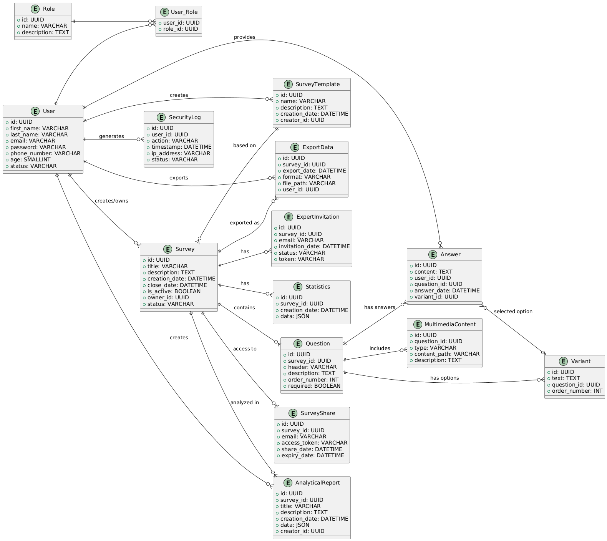

Репозиторій для виконання лабораторних робіт з дисципліни "Організація без баз даних"
Тема
Система організації та управління опитуваннями експертів "DS bratsvo data"
Автори
- Колодницький Володимир Сергійович (студент 2-го курсу, групи ІО-34) Telegram
- Панюшкін Владислав Вадимович (студент 2-го курсу, групи ІО-34) Telegram
- Рибачок Михайло Володимирович (студент 2-го курсу, групи ІО-34) Telegram
- Собкович Роман Сергійович (студент 2-го курсу, групи ІО-34) Telegram
- Сюкало Діана Сергіївна (студентка 2-го курсу, групи ІО-34) Telegram
- Токарюк Станіслав Борисович (студент 2-го курсу, групи ІО-34) Telegram
Керівник
доцент кафедри ОТ ФІОТ, к.т.н.
Андрій БОЛДАК
НТУУ "КИЇВСЬКИЙ ПОЛІТЕХНІЧНИЙ ІНСТИТУТ імені ІГОРЯ СІКОРСЬКОГО"
Факультет інформатики та обчислювальної техніки
Кафедра обчислювальної техніки
Київ
Вступ
У вступі описується мета роботи і розглядається поставлене завдання з позиції її актуальності, значення її розв’язання для тієї предметної області, до якої відноситься тема бакалаврського проєкту.
Коротко характеризується сучасний рівень розв’язання даного завдання і взаємозв’язок з іншими проєктами по цій тематиці.
Наводяться основні технічні характеристики розробки й очікуваний технічно-економічний ефект від її реалізації.
Розроблення загальних вимог до системи
Аналіз предметної області
Вступ
У даному розділі буде детально проаналізовано предметну область системи організації та управління опитуваннями експертів. У глосарії буде визначено основну термінологію цієї області. Буде проведено аналіз наявних методів опитування. Проаналізуємо які існують підходи до вирішення подібних завдань. Під кінець звернемося до вже наявних аналогів даної системи та зробимо їхню порівняльну характеристику. У висновку буде зазначено, на які моменти слід зважати під час реалізації системи організації та управління опитуваннями експертів
Основні визначення
Технічні визначення
📝Система опитувань (Survey System)
Система опитувань — це програмно-апаратний комплекс, призначений для створення, проведення та аналізу опитувань. Вона включає інструменти для формування запитань, збору відповідей, обробки результатів і візуалізації даних.
Детальніше про системи опитування
📚База знань (Knowledge Base)
База знань — це структурована інформаційна система, яка містить сукупність фактів, правил і евристик, що використовуються для прийняття рішень або аналізу отриманих даних. В системі опитувань база знань допомагає інтерпретувати відповіді експертів та формувати рекомендації.
💡Експертна система (Expert System)
Експертна система — це комп'ютерна програма, яка використовує базу знань для імітації процесу прийняття рішень людиною-експертом у конкретній предметній області.
Детальніше про експертні системи
🔄 Реляційна база даних (Relational Database)
Реляційна база даних — це тип бази даних, в якому дані зберігаються в таблицях (відносних моделях), які взаємопов'язані через спільні атрибути (ключі). Вони використовуються для зберігання великих обсягів структурованої інформації та забезпечують ефективний доступ до неї за допомогою SQL.
Детальніше про реляційні бази даних
💻SQL
SQL (англ. Structured query language — мова структурованих запитів) — декларативна мова програмування для взаємодії користувача з базами даних, що застосовується для формування запитів, оновлення і керування реляційними БД, створення схеми бази даних та її модифікації, системи контролю за доступом до бази даних.
Вона використовується для:
🗂 Формування запитів до реляційних баз даних (РБД)
✏️ Оновлення і керування даними
🏗 Створення та модифікації схеми бази даних
🔐 Контролю доступу до даних
💡 Важливо: SQL — це не система керування базами даних (СКБД) і не окремий програмний продукт. Вона виступає як інструмент для роботи з даними — формує інтерактивні запити або вбудовується в прикладні програми як інструкції для керування даними.
🛠 Стандарт SQL також включає функції для:
📐 Визначення структури даних
🔄 Зміни даних
✅ Перевірки даних
🛡 Захисту інформації
💻 Інтерфейс програмування додатків (API)
API (Application Programming Interface) — це набір інтерфейсів і методів для взаємодії між програмами. В системах опитувань API можуть використовуватися для інтеграції з іншими системами, наприклад, для збору результатів з різних платформ або передачі результатів в інші системи для подальшого аналізу.
Загальні визначення
📝Опитування (Survey)
Опитування — це метод збору інформації шляхом отримання відповідей на запитання від групи респондентів. Вони можуть бути анонімними або відкритими, проводитися в усній або письмовій формі, як в електронному вигляді, так і особисто.
👨🏫 Експерт (Expert)
Експерт — це фахівець, який має глибокі знання та практичний досвід 🛠 у певній предметній області. Він здатний проводити аналіз ситуацій, надавати обґрунтовані оцінки та формулювати рекомендації для прийняття рішень.
📝 Експертне опитування (Expert Survey)
Експертне опитування — це метод збору даних 📊, що базується на думках фахівців, компетентних у певній сфері.
Використовується для отримання:
📈 Професійних оцінок ситуацій та явищ
🔮 Прогнозів щодо можливого розвитку подій
💡 Рекомендацій для прийняття рішень і формування стратегій
🎯 Drag & Drop
Drag & Drop (перетягування) — форма виконання певних дій у графічних інтерфейсах користувача (GUI), що передбачає використання комп'ютерної миші або сенсорного екрана. У дослівному перекладі з англійської мови означає «тягни та кинь». Дія виконується шляхом оперування видимими на екрані комп'ютера об'єктами за допомогою миші. Суть дії полягає у перетягуванні віртуальних об'єктів з одного місця у інше і таким чином виконанні певних дій або у програмі, або у взаємодії кількох програм. Базовими прикладами Drag&Drop дій є переміщення об'єкта (наприклад, перетягування файлу із файлового менеджера у вікно програми чи у те, чи інше місце ієрархії), перетягування виділеного тексту у редакторі із одного місця у інше, якщо це відбувається за допомогою миші.
Методи експертного опитування
🔥 Активні методи
- 🗣️ Інтерв'ю (Interview)
Інтерв'ю — це метод збору інформації через безпосередню комунікацію з експертом, під час якої ставляться попередньо підготовлені або спонтанні запитання. Це дозволяє отримати детальні, персоналізовані відповіді та виявити нюанси, що можуть бути не очевидними у письмових запитах.
- 💬 Діалог (Dialogue)
Діалог — це невимушена бесіда між дослідником і експертом, яка дозволяє гнучко змінювати напрямок розмови залежно від отриманих відповідей. Цей метод дає можливість виявити нові ідеї та розширити рамки обговорення.
- 🎮 Експертні ігри (Expert Games)
Експертні ігри — це метод моделювання ситуацій, у яких експерти пропонують рішення на основі своїх знань і досвіду. Ці ігри дозволяють імітувати реальні умови та оцінити можливі варіанти розвитку подій, що дає змогу виявити нестандартні підходи до вирішення проблем.
Цікаві факти:
- Інтерв'ю дозволяють не тільки отримати факти, але й зрозуміти мотивацію експерта.
- Діалоги можуть бути використані для генерації нових ідей у реальному часі.
- Експертні ігри зазвичай застосовуються для пошуку інноваційних рішень в умовах невизначеності.
🧑🤝🧑 Методи роботи з групою
- 🏛️ Круглий стіл (Round Table)
Круглий стіл — це дискусія між експертами з метою всебічного аналізу проблеми. Учасники мають рівні права на висловлення думок, що дозволяє створити атмосферу відкритого обміну ідеями. Це сприяє кращому розумінню різних точок зору та прийняттю обґрунтованих рішень.
- 💡 Мозковий штурм (Brainstorming)
Мозковий штурм — це метод генерування ідей в групі експертів, спрямований на швидке знаходження рішень через колективну творчість. Всі учасники вільно висловлюють свої ідеї без критикування, що дозволяє максимально розкрити потенціал кожного та знайти нові підходи до вирішення проблем.
- 🎭 Рольові ігри (Role-Playing Games)
Рольові ігри — це метод, під час якого експерти розігрують ситуації з предметної області, щоб виробити оптимальні рішення. Імітація реальних ситуацій дає можливість глибше зануритись у проблему та випробувати різні стратегії вирішення в безпечному середовищі.
🧑💻 Пасивні методи
- 👀 Спостереження (Observation)
Спостереження — це метод збору даних шляхом фіксації поведінки та дій експертів у процесі виконання завдань. Цей метод дозволяє отримати непрямі дані про експертів, їх підходи до роботи та взаємодію в реальних умовах.
Спостереження допомагає розкрити невидимі аспекти діяльності, які не завжди можуть бути виражені словами.
- 📄 Аналіз документів (Document Analysis)
Аналіз документів — це вивчення звітів, статей, протоколів і інших матеріалів для отримання інформації, що стосується досліджуваної теми. Цей метод дає можливість відстежити тенденції та зібрати факти з наявних джерел без безпосередньої взаємодії з експертами.
Аналіз документів часто використовується для поглибленого дослідження теми на основі наявних записів.
Детальніше про аналіз документів
📄 Анкета та анкетування
Анкета – поширений з ХІХ ст. вид діагностичних та дослідницьких методик, відомих як серії тематично пов’язаних питань, певним чином упорядкованих, відкритого або закритого типу, що містять питання демографічного характеру, наприклад: вік, професія, рівень освіти респондента тощо, та звертання до респондента.
Анкетування – метод масового збору матеріалу за допомогою спеціально розроблених опитувальників, що називаються анкетами.Це різновид опитування, який передбачає заповнення респондентом власноруч спеціального бланку із запитаннями анкети, яка також містить інформацію соціально-демографічного характеру про респондента.
Детальніше про анкети та анкетування
Підходи та способи вирішення завдання
З добрим словом та пістолетом можна досягти набагато більше, ніж просто з добрим словом.
Сунь-Дзи "Мистецтво війни" Глава 7
Почекайте, а він таке казав? А власне, яка різниця? Бо суть описана дуже влучно. Коли маєш справу зі складним завданням, надзвичайно важливо використовувати різні методи підходу, оскільки це не тільки допоможе прискорити вирішення, але і вбереже від появи хибних висновків. Наведемо (на нашу скромну думку) найкращі методи роботи, при опитуванні великої чи малої кількості експертів.
- Метод незалежних характеристик:
Колись спадкоємцю французької корони Людовіку VIII, всі при дворі казали, що він неперевершений дуелянт.
Та практика показала інше. Образившись по нісенітниці, він викликав на дуель одного з вельмож (не найкращго шпагіста) і програв.
Мораль: якщо питаєте в когось думку, беріть людей не з одного середовища.
Власне у цьому і весь метод: дозволяє отримати узагальнену оцінку певного явища, інформація про який надходить із кількох незалежних джерел (від різних експертів). + кожен експерт оцінює об'єкти за кількома незалежними характеристиками.
Метод можна поділити на три основні етапи:
- Збір та порівняння думок – отримані оцінки зіставляються між собою.
- Обробка даних – використання математичних і статистичних методів для аналізу оцінок, усунення суб'єктивних відхилень.
- Формування висновків – на основі опрацьованих даних формулюються об'єктивні та достовірні результати.\n
- Метод "Дельфі" ("Дельфі, як дельфін, тільки Дельфі")
Ніколи не було бажання, читаючи якийсь цікавий роман, крикнути головному герою: "Розумник, що ти робиш? Подумай ще!"
Ні? Шкода, бо це якраз про метод "Дельфі".
Анонімне опитування, проте є одна особливість: експерти мають можливість переглядати свої оцінки
після ознайомлення з узагальненими думками інших учасників, що дозволяє поступово уточнювати та покращувати оцінку.
Експертам культурно кажуть: "Подумайте ще)"
Етапи методу:
- Перший тур: експерти дають свої оцінки без аргументації.
- Обробка результатів: виділяються крайні та середні судження, після чого інформація анонімно надається всім учасникам. Наступні тури (зазвичай 2-4): експерти можуть переглянути свої оцінки, уточнити аргументацію або змінити думку під впливом узагальнених відповідей інших учасників.
- Фінальний етап: коли оцінки стабілізуються, формується узгоджене рішення.
- Метод "мозкового штурму"
Яку ж розповісти тут цікаву історію?! Може знов про якогось монарха? Ні, вже було...
А може про шоу "Що? Де? Коли?"? Його, вже багато хто не пам'ятає...
А може вже перестати говорити, і нарешті розповісти про метод? Хм, а це воно!
Мозковий штурм (brainstorming) — це один із найвідоміших методів колективного прийняття рішень, орієнтований на генерацію творчих ідей у невимушеній обстановці. Ключове слово: "невимушеній". Основна мета — подолати психологічні бар’єри та стереотипи мислення, що зазвичай стримують новаторські ідеї.
Але на відмінну від інших методів, цей ще й має принципи: Вільне генерування ідей – учасники пропонують ідеї спонтанно, без попереднього обдумування. Відсутність критики – будь-які ідеї приймаються без оціночних суджень, щоб не стримувати творчий процес. Кількість важливіша за якість – чим більше ідей, тим вищі шанси знайти оптимальне рішення. Комбінування та розвиток ідей – учасники можуть доповнювати або розвивати пропозиції інших.
- Метод письмового опитування:
Перепрошуємо за сухість тексу, наш креативний редактор відійшов заповнювати анкету.
Метод письмового опитування - заочний спосіб збору експертних думок шляхом розсилання спеціально підготовлених опитувальних листів або анкет. Він подібний до вільного інтерв’ю, але відрізняється письмовою формою, що дає змогу залучити ширше коло експертів.
Основні методи': В опитувальниках зазвичай використовується 50-90% відкритих питань, що дозволяє отримати розгорнуті відповіді. Експерти самостійно заповнюють анкети без безпосереднього контакту з дослідником. Можливе проведення як у традиційному письмовому вигляді, так і через онлайн-формати.
- Метод комісії:
І зібралося 12 лицарів за круглим столом: Гавейн, Ланселот, Трістан, Галахад, Парсіваль, Борс, Кей, Мордред, Гарет, Мерлін і король Артур.
І сказав Трістан безстрашний: "Пів першої ночі! Ви в своєму розумі в таку пору збиратись? А, і кого забули? Нас 11."
А король Артур йому і відповів: "Кого забули? Кого забули? Добре, що тебе не забули. Сідай, "метод комісії" повинні обговорити ми!"
Все як у старій легенді: 12 експертів, круглий стіл і проблема, що потребує вирішення.
Метод комісії – це відкрита дискусія експертів, спрямована на вироблення єдиної думки щодо вирішення певної проблеми. Учасники – представники різних наукових напрямків або сфер діяльності – збираються за «круглим столом» для колективного обговорення.
Основні характеристики методу: Обговорення триває до досягнення консенсусу, що робить процес довготривалим. Організатор не керує дискусією, а лише сприяє активній участі всіх експертів. Основні завдання:
- Виявлення суперечностей у поглядах.
- Знаходження «точок згоди».
- Формування узгодженого рішення.
- Метод неспеціаліста.
Як там у старій поговірці? "Пошли дурня Богу молитися, так він і проблему вирішить"
Пані та панове, наш улюблений метод: "запитай у того, хто не шарить!"
Метод неспеціаліста – це підхід до вирішення проблеми за участю експертів, які не мають безпосереднього досвіду в конкретній галузі, але є фахівцями у суміжних сферах.
Ви запитаєте, "а для чого?" "Оригінальні ідеї та свіжість погляду" - відповімо ми.
- Метод прогнозованих сценаріїв:
Звичайно погано, коли придумуєш у голові сценарії, а ніхто з людей навіть і не думає їм слідувати.
Але значно гірше, коли щось відбувається, а в тебе навіть немає уявлення по якому це сценарію.
Метод прогнозних сценаріїв – це підхід до аналізу майбутнього, що передбачає імовірнісний опис можливих варіантів розвитку подій на основі експертних оцінок та технічних суджень.
Основні характеристики: Сценарій - це опис майбутнього, який враховує різні фактори впливу. Один прогноз зазвичай включає три основних сценарії:
- Оптимістичний – найсприятливіший розвиток подій.
- Песимістичний – найгірший можливий варіант.
- Проміжний (реалістичний) – найбільш ймовірний або очікуваний сценарій.
Порівняльна характеристика існуючих засобів вирішення завдання
Описані нижче засоби використовуються для вирішення поставленого завдання. Вони порівнюються за характеристиками FURPS: функціональність, зручність роботи, надійність, продуктивність і підтримка.
Опис засобів
Google Forms
Google Forms (англ. Google Forms) — програмне забезпечення для адміністрування опитування, що входить до складу безкоштовного вебпакету Google Docs Editors, пропонованого Google. Додаток дозволяє користувачам створювати та редагувати опитування в Інтернеті, співпрацюючи з іншими користувачами в режимі реального часу. Зібрану інформацію можна автоматично внести в електронну таблицю.
Survio
Survio — зручний онлайн-сервіс для створення опитувань, збору відгуків і дослідження ринку. Він пропонує широкий вибір шаблонів, автоматизовану обробку відповідей та базові аналітичні функції. Ідеально підходить для невеликих і середніх досліджень, надаючи користувачам простий у використанні інтерфейс та інтеграційні можливості.
SurveyMonkey
SurveyMonkey - це сервіс для створення опитувань, а також масової розсилки анкет і виявлення тенденцій. Сервіс дозволяє швидко створювати опитування, налаштовувати їх вигляд, проводити A/B тестування, інтегрувати опитування на сайтах та соціальних мережах, створювати дуже детальні та візуальні звіти, захищати дані.
Детальніше про SurveyMonkey
Typeform
Typeform — це онлайн-сервіс для створення красивих та інтерактивних форм, опитувань. Він славиться своїм естетичним та інтуїтивно зрозумілим інтерфейсом. Typeform дозволяє створювати анімаційні форми, опитування та анкети, які легко інтегруються у веб-сайти та додатки. Результати відображаються у зручному форматі для аналізу та використання.
"OCA"
"OCA" - програмне забезпечення у відкритому доступі, була створена у 1989 році Інститутом соціології НАН України і успішно використовувалась для обробки та аналізу даних соціологічних та маркетологічних досліджень. На сьогоднішній день в рамках платформи "ОСА" доступні програмні технології, такі як OCA MakeForm, OCA CATI, OCA CAPI Android, OCA MakeFormPsy, OCA for Windows, OCA New Line, OCA New Line Technology та OCA Online, які дозволяють проводити різноманітні дослідження та аналізувати дані за допомогою комп'ютера.
SurveyJS
SurveyJS — це набір компонентів JavaScript, які дозволяють вам і вашим користувачам створювати опитування, вікторини, опитування та інші веб-форми, зберігати їх у вашій базі даних і візуалізувати результати опитування на користувацьких інформаційних панелях.
Порівняльна таблиця
| Засіб | Functionality (Функціональність) | Usability (Зручність) | Reliability (Надійність) | Performance (Продуктивність) | Supportability (Підтримка) |
|---|---|---|---|---|---|
| Google Forms | Дозволяє створювати опитування, анкети, тести та форми для збору даних. Підтримує різні типи запитань, інтегрується з Google Sheets. | Простий інтерфейс, зручне створення форм через drag-and-drop. Доступний на будь-якому пристрої. | Стабільна робота, автоматичне збереження даних, мінімальний ризик втрати інформації. | Швидко обробляє велику кількість відповідей, легко інтегрується з іншими сервісами Google. | Офіційна документація, підтримка від Google, доступні навчальні матеріали та форуми. |
| Survio | Онлайн-платформа для створення опитувань і анкет. Підтримує різні типи запитань, автоматичний аналіз відповідей, генерацію звітів та експорт у різні формати. | Інтуїтивно зрозумілий інтерфейс, велика кількість шаблонів для швидкого створення анкет. | Стабільна робота, збереження даних у хмарі, можливість резервного копіювання. | Висока швидкодія, швидке завантаження анкет, ефективна обробка великої кількості відповідей. | Офіційна підтримка, база знань, навчальні матеріали, платні тарифні плани з розширеною підтримкою. |
| SurveyMonkey | Потужний інструмент для створення опитувань, тестів і анкет. Підтримує логіку питань, аналітику відповідей, інтеграцію з CRM та іншими сервісами. | Зручний інтерфейс, наявність шаблонів, можливість налаштовувати дизайн і структуру опитувань. | Висока стабільність, автоматичне збереження відповідей, шифрування даних. | Оптимізована швидкодія навіть при великій кількості респондентів, швидка обробка відповідей. | Офіційна підтримка, навчальні матеріали, форум користувачів, доступні тарифні плани з розширеною підтримкою. |
| Typeform | Інтерактивний сервіс для створення форм, опитувань і вікторин. Підтримує логіку питань, мультимедіа (зображення, відео), інтеграції з іншими платформами (Zapier, Slack, HubSpot). | Сучасний та мінімалістичний дизайн, плавний досвід проходження опитувань, мобільна адаптація. | Висока надійність, автоматичне збереження відповідей, шифрування даних для безпеки. | Оптимізована швидкодія, висока продуктивність навіть при складних анкетах та інтеграціях. | Офіційна підтримка, база знань, навчальні матеріали, API для розробників. |
| "OCA" | Гнучкість налаштувань під конкретні потреби проєкту. | Складний інтерфейс, можливість глибокої персоналізації. | Включає всі базові функції: оновлення, підтримку та захист даних. | Централізоване управління з автоматизацією, можливі затримки через складність системи. | Спеціалізована підтримка для окремих проєктів, але вимагає більше ресурсів. |
| SurveyJS | Розширені можливості налаштування, інтеграція у веб-додатки. | Вимагає технічних навичок для освоєння. | Надійність залежить від рівня конфігурації користувача. | Швидкість обробки даних варіюється залежно від налаштувань. | Підтримка доступна через форуми та спільноти розробників. |
Усі представлені засоби мають свої переваги та недоліки, що впливають на їх вибір залежно від конкретних потреб.
Висновки
Система організації та управління опитуваннями експертів є важливою для аналізу бізнес процесів, аналізу вимог ринку. Серед зазнчених вище систем найкращим варіантом для вирішення поставленої задачі є система "SurveyMonkey", хоча у ній є кілька недоліків. До них входить доволі складний і не завжди зрозумілий інтерфейс та лише платний варінат використання для проведення опитування серед багатьох людей. Є сенс розробити систему, де клієнти могли б отримувати відповіді на опитування безкоштовно
Посилання
Детальніше про системи опитування
Детальніше про експертні системи
Детальніше про реляційні бази даних
Детальніше про аналіз документів
Детальніше про анкети та анкетування
Запити зацікавлених осіб
Вступ
У цьому розділі описані потреби та вимоги людей, які користуватимуться системою "Expert-O-Matic" або зацікавлені в її роботі. Він допомагає визначити, як система повинна працювати, щоб відповідати потребам користувачів та покращувати процес організації та управління експертними опитуваннями.
Тут розглядаються ключові аспекти: мета створення системи, її зв’язок з іншими проєктами, основні терміни, бізнес-процеси та функціональні вимоги. Також пояснюється, які проблеми вирішує система та як вона забезпечує зручність, безпеку й ефективність.
Мета
Сформувати розуміння ключових вимог зацікавлених осіб, щоб спрямувати розвиток системи у відповідності до їхніх потреб. Це дозволить підвищити ефективність роботи з опитуваннями та забезпечити якісний аналіз отриманих даних.
Контекст
Цей документ містить теоретичні відомості, визначення та загальний огляд функціональності, які допоможуть розробникам розуміти напрямок роботи над програмним продуктом, а клієнтам — сформувати чітке уявлення про його можливості та очікувані результати.
Він безпосередньо пов'язаний з:
- Google Forms, SurveyMonkey, Qualtrics – системами збору та аналізу даних, що використовуються для обробки опитувань.
- Внутрішні CRM-системи, ERP-рішення – адміністративними панелями управління, які забезпечують налаштування опитувань, управління користувачами та доступами.
- Power BI, Tableau, Google Data Studio – бізнес-аналітичними інструментами, що використовують результати опитувань для стратегічного планування.
- Jira, Trello, Asana – системами управління проєктами, які можуть інтегруватися із системою для автоматизації процесів опитування та аналізу результатів.
Основні визначення та скорочення
Зацікавлена особа – фізична особа або група, яка має законний інтерес до компанії, організації чи бізнесу.
Інтерфейс користувача – візуалізація компонентів сайту чи додатка, з якими будуть безпосередньо взаємодіяти користувачі.
Опитування – процес збору інформації від респондентів за допомогою спеціально розроблених анкет.
Аналітик – користувач, який займається обробкою та аналізом отриманих відповідей.
Респондент – людина, яка відповідає на запитання опитування.
Адміністратор – користувач із правами управління системою, який налаштовує параметри доступу та контролює процеси.
Клієнт – користувач, який створює опитування, аналізує результати та керує процесом збору даних.
Експерт – спеціаліст, що відповідає на запитання опитувань із врахуванням своєї професійної компетенції.
CRM-система – програмне забезпечення для управління відносинами з клієнтами та оптимізації бізнес-процесів.
ERP-система – комплексне програмне рішення для управління ресурсами підприємства.
🔗 Посилання
- Зацікавлена особа
- Інтерфейс користувача
- Опитування
- Аналітик
- Респондент
- CRM-система
- ERP-система
- Google Forms
- SurveyMonkey
- Power BI
- Tableau
- Google Data Studio
📜 Короткий зміст
- 🚀 Характеристика ділових процесів
- 🔍 Короткий огляд продукту
- ⚙️ Функціональність
- 🎨 Практичність
- 🔐 Надійність
- 🚀 Продуктивність
- 🛠️ Експлуатаційна придатність
🚀 Характеристика ділових процесів
🌍 Впливові фактори бізнесу
🔹 Зовнішні фактори (бізнес-актори)
- 👥 Клієнти
- 🤝 Партнери
- 🏛️ Регулюючі органи
- ⚔️ Конкуренти
🔹 Внутрішні фактори (робітники)
- 👨💼 Адміністратори
- 📊 Аналітики
- 📋 Менеджери
- 🧑💻 Користувачі системи
📌 Основні процеси бізнесу
1️⃣ Підготовка та реалізація опитування
SURVEY.PREPARE
| Поле | Значення |
|---|---|
| Назва | Підготовка та запуск опитування |
| Учасники | Аналітик, менеджер, респондент, система |
| Передумови | Заплановане проведення опитування, готовий список цільової аудиторії |
| Результат | Опитування успішно проведено, отримані відповіді |
| Виключні ситуації | - Відсутність достатньої кількості респондентів - Технічні проблеми системи - Невідповідність формату опитувальника вимогам |
| Основний сценарій | 1. Аналітик розробляє структуру опитування. 2. Менеджер перевіряє та узгоджує опитувальник. 3. Опитування розсилається цільовій аудиторії. 4. Респонденти заповнюють опитувальник. 5. Дані передаються в систему для аналізу. |
2️⃣ Аналіз зібраних даних
SURVEY.ANALYZE
| Поле | Значення |
|---|---|
| Назва | Аналіз отриманих відповідей |
| Учасники | Аналітик, система, замовник |
| Передумови | Отримані результати опитування |
| Результат | Аналітичний звіт на основі опитування |
| Виключні ситуації | - Неповні або некоректні дані - Недостатня кількість відповідей |
| Основний сценарій | 1. Система обробляє отримані дані. 2. Аналітик виконує верифікацію та чистку даних. 3. Проводиться статистичний аналіз. 4. Генерується звіт та візуалізація даних. 5. Замовник отримує результати у вигляді графіків та звіту. |
3️⃣ Управління користувачами в системі
USER.MANAGEMENT
| Поле | Значення |
|---|---|
| Назва | Управління користувачами та їх доступом |
| Учасники | Користувач, адміністратор, система |
| Передумови | Користувач має потребу в доступі до системи |
| Результат | Користувач отримує доступ до системи або його налаштовує |
| Виключні ситуації | - Неправильні або неповні дані при реєстрації - Втрата пароля - Відсутність прав доступу |
| Основний сценарій | 1. Користувач реєструється в системі. 2. Система перевіряє правильність введених даних. 3. Успішно зареєстрований користувач отримує доступ. 4. Адміністратор може змінювати ролі та права доступу. 5. У разі проблем користувач відновлює пароль через email. |
4️⃣ Формування та адміністрування опитувань
SURVEY.MANAGE
| Поле | Значення |
|---|---|
| Назва | Створення, редагування та публікація опитувань |
| Учасники | Адміністратор, користувач, система |
| Передумови | Користувач має необхідні права для створення опитування |
| Результат | Опитування опубліковане та доступне респондентам |
| Виключні ситуації | - Технічні помилки при збереженні опитування - Відсутність прав для редагування - Некоректно заповнена форма опитування |
| Основний сценарій | 1. Користувач створює нове опитування. 2. Визначає формат та додає запитання. 3. Зберігає опитування в системі. 4. Адміністратор перевіряє та затверджує опитування. 5. Опитування публікується та розповсюджується серед респондентів. |
5️⃣ Експорт та аналіз результатів
SURVEY.EXPORT
| Поле | Значення |
|---|---|
| Назва | Отримання результатів та звітності |
| Учасники | Аналітик, клієнт, система |
| Передумови | Закінчений збір відповідей |
| Результат | Експортовані результати у форматі звіту |
| Виключні ситуації | - Відсутність відповідей у базі даних - Вибір некоректного формату експорту |
| Основний сценарій | 1. Аналітик формує запит на отримання результатів. 2. Система обробляє дані та генерує статистику. 3. Користувач отримує доступ до результатів у форматі Excel/PDF. 4. У разі потреби, додаються графіки та аналітичні висновки. |
🔍 Короткий огляд продукту
Expert-O-Matic — має дві категорії користувачів: клієнти та експерти. Клієнти — це люди, які створюють опитування та на основі відповідей отримують статистику й аналіз даних. Вони можуть створювати нові опитування, закривати існуючі, збирати статистику, ділитися опитуваннями, експортувати візуалізовані та невізуалізовані дані, а також додавати та видаляти питання з наявних опитувань. Експерти — це користувачі, які отримують опитування та проходять їх. Вони можуть відповідати на запитання та змінювати свої відповіді за необхідності.
👥 Клієнти:
- 📝 Створювати нові опитування
- ❌ Закривати існуючі
- 📊 Збирати статистику
- 🔗 Ділитися опитуваннями
- 📤 Експортувати візуалізовані та невізуалізовані дані
- ➕ Додавати та ➖ видаляти питання з наявних опитувань
👨💻 Експерти:
- ✅ Відповідати на запитання
- 🔄 Змінювати свої відповіді за необхідності
⚙️ Функціональність
🏢 Клієнт
- 🆕 Створювати та ❌ закривати опитування
- 🔧 Додавати або видаляти питання
- 📊 Отримувати та 📤 експортувати результати
- 🔗 Ділитися опитуваннями
- 🔐 Реєструватися та авторизуватися
🎯 Експерт
- ✅ Проходити опитування
- ✏️ Редагувати свої відповіді
🎨 Практичність
- 🖥️ Простий та інтуїтивний інтерфейс
- 🚀 Використання без обов’язкової реєстрації
- 💰 Безкоштовний доступ
- 🖼️ Додавання мультимедійного контенту
- 📑 Готові шаблони для опитувань
🔐 Надійність
- 🔒 Захищене збереження даних
- ⚡ Витримує високі навантаження
- 🛠️ Регулярний моніторинг та виправлення помилок
- 🛡️ Шифрування конфіденційної інформації
- 💾 Збереження даних на сервері
🚀 Продуктивність
- ⚡ Оптимізовані серверні запити
- 📡 Моніторинг продуктивності
- 🚦 Висока пропускна здатність
- 🧵 Використання багатопоточності
- 🔄 Асинхронні процеси
🛠️ Експлуатаційна придатність
- 🔍 Регулярні перевірки безпеки
- 📝 Чистий та зрозумілий код
- 🔄 Постійні оновлення
- 🎛️ Система контролю версій
- 🎓 Простота використання навіть для новачків
Розроблення функціональних вимог до системи
У цьому розділі містяться діаграми прецедентів, зокрема загальна та конкретизовані, і діаграми активностей.
Короткий зміст
Діаграми прецедентів бізнес акторів
Діаграма прецедентів (або діаграма варіантів використання) (англ. Use case diagram) — в UML, діаграма, на якій зображено відношення між акторами та прецедентами в системі.
Діаграма прецедентів показує різні варіанти використання та різні типи користувачів системи і часто супроводжується іншими типами діаграм. Варіанти використання представлені колами або еліпсами. Актори (дійові особи) часто зображуються у вигляді паличок.
Діаграма use case для всіх бізнес акторів
@startuml
actor "Користувач" as User #ffed94
usecase "Створити акаунт" as UC_1.1
usecase "Увійти в акаунт" as UC_1.2
usecase "Видалити акаунт" as UC_1.3
usecase "Редагувати дані акаунта" as UC_1.4
usecase "Зареєструватись за допомогою пошти" as UC_1.1.1
usecase "Відновити пароль" as UC_1.2.1
usecase "Підтвердити дію" as UC_1.34.1
usecase "Змінити пароль" as UC_1.4.1
usecase "Змінити особисті дані" as UC_1.4.2
User -up-> UC_1.1
User -right-> UC_1.2
User -down-> UC_1.3
User -left-> UC_1.4
UC_1.1.1 ..> UC_1.1 :extends
UC_1.2.1 .left.> UC_1.2 :extends
UC_1.34.1 <.r. UC_1.3 :includes
UC_1.34.1 <.up. UC_1.4 :includes
UC_1.4.1 .right.> UC_1.4 :extends
UC_1.4.2 ..> UC_1.4 :extends
right footer
Модель прецедентів користувача.
НТУУ КПІ ім.І.Сікорського
Київ-2024
end footer
@enduml
@startuml
right header
<font size=24 color=black>Package: <b>UCD_3.0
end header
title
<font size=18 color=black>UC_8. Редагувати конфігурацію порталу
<font size=16 color=black>Діаграма прецедентів
end title
actor "Користувач" as User #eeeeaa
package UCD_1{
usecase "<b>UC_1</b>\nПереглянути список \nзвітів" as UC_1 #aaeeaa
}
usecase "<b>UC_1.1</b>\nЗастосувати фільтр" as UC_1.1
usecase "<b>UC_1.2</b>\nПереглянути метадані \nзвіту" as UC_1.2
usecase "<b>UC_1.2.1</b>\nДати оцінку звіту" as UC_1.2.1
usecase "<b>UC_1.2.2</b>\nПереглянути інформацію \nпро авторів звіту" as UC_1.2.2
package UCD_1 {
usecase "<b>UC_4</b>\nВикликати звіт" as UC_4 #aaeeaa
}
usecase "<b>UC_1.1.1</b>\n Використати \nпошукові теги" as UC_1.1.1
usecase "<b>UC_1.1.2</b>\n Використати \nрядок пошуку" as UC_1.1.2
usecase "<b>UC_1.1.3</b>\n Використати \nавторів" as UC_1.1.3
User -> UC_1
UC_1.1 .u.> UC_1 :extends
UC_1.2 .u.> UC_1 :extends
UC_4 .d.> UC_1.2 :extends
UC_1.2 .> UC_1.2 :extends
UC_1.2.1 .u.> UC_1.2 :extends
UC_1.2.2 .u.> UC_1.2 :extends
UC_1 ..> UC_1.2.2 :extends
UC_1.1.1 -u-|> UC_1.1
UC_1.1.2 -u-|> UC_1.1
UC_1.1.3 -u-|> UC_1.1
right footer
Аналітичний портал. Модель прецедентів.
НТУУ КПІ ім.І.Сікорського
Киів-2020
end footer
@enduml
Діаграма прецедентів
Проєктування бази даних
Mодель бізнес-об'єктів
ER-модель
ER-модель описує сутності системи та визначає зв'язки між ними. [детальніше]

Реляційна схема
Реалізація інформаційного та програмного забезпечення
В рамках проекту розробляється:
- SQL-скрипт для створення на початкового наповнення бази даних
- RESTfull сервіс для управління даними
Тестування працездатності системи
В цьому розділі необхідно вказати засоби тестування, навести вихідні коди тестів та результати тестування.
Висновки
У висновках наводять оцінку отриманих результатів, можливі галузі його використання. Висновки повинні містити в собі коротку узагальнену оцінку результатів розробки, у тому числі і з погляду на їх технічно-економічну ефективність. Необхідно порівняти отримані результати усіх характеристик об’єкта проєктування із завданням і з основними показниками сучасних аналогічних об’єктів.
Необхідно вказати яке нове технічне рішення покладене в основу проєкту і у чому її переваги, що нового було запропоновано самим студентом.
На базі отриманих висновків можуть надаватися рекомендації по використанню розробки. Вони повинні мати конкретний характер і бути цілком підтверджені проєктом.